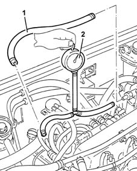

1040A Fuel supply system - Low pressure delivery check
- Path
- Test > 10 ENGINE > 1040 FUEL TANK AND PIPES > 1040A Fuel supply system - Low pressure delivery check
- Kind
- test / check procedure
- Applies to
- engines: 1.9 JTD 8v , 2.4 JTD 10v; all production periods
- Interactive page
- https://sloeber94.github.io/elrnDB-a156/en/#/3239143
Applies to: engines: 1.9 JTD 8v , 2.4 JTD 10v; all production periods
Loosen the bands and remove the pipe between the fuel filter and the pressure pump.
Connect a pressure gauge (0 - 5 bar) between the fuel filter and the pressure pump.
Place the ignition key in the ON position and, within 30 seconds, check that the pressure is 1.8 - 3.0 bar.
